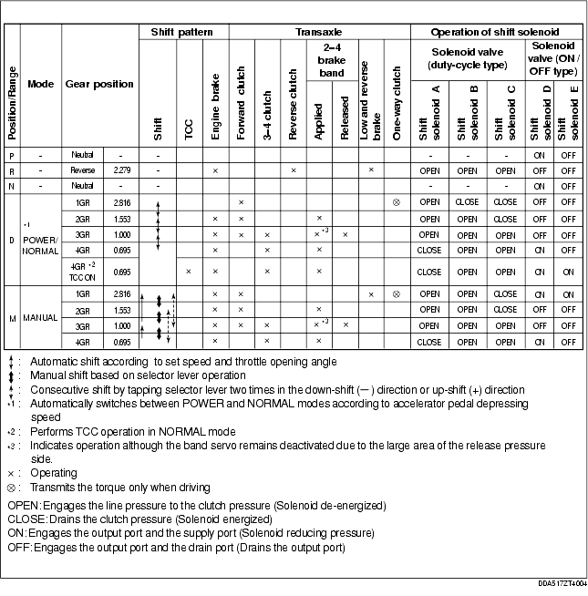
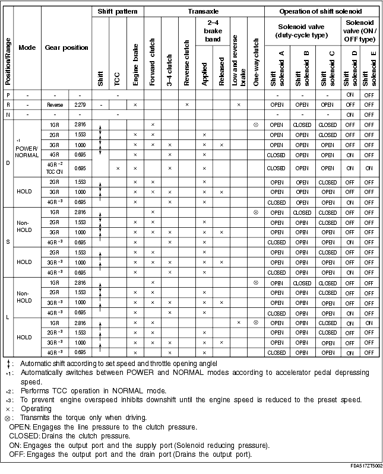

Mazda2
service manual
Search the manual
Home
Technical Guide
Transmission/transaxle
Automatic transaxle [FN4A-EL]
EC-AT operation chart [FN4A-EL]
EC-AT operation chart [FN4A-EL]
Sport AT

4AT

Previous
Outline of operation [FN4A-EL]
Next
Powerflow outline [FN4A-EL]